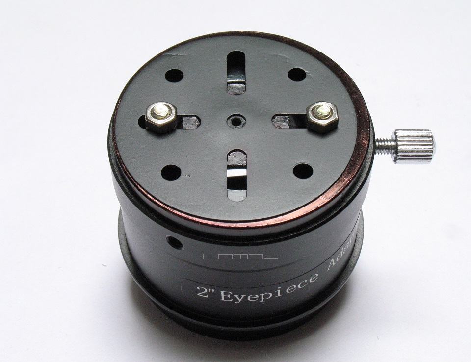
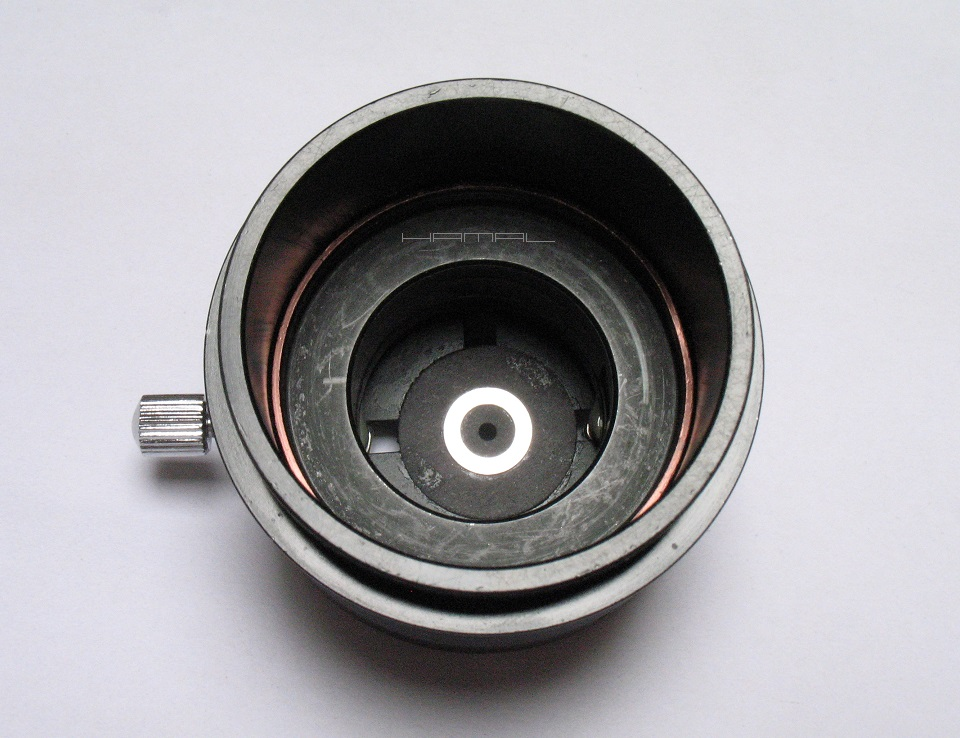
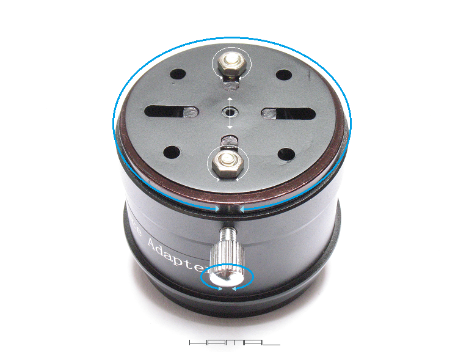
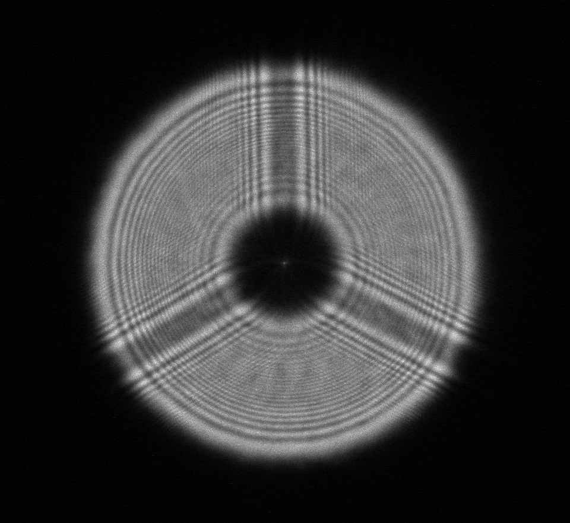

.
Opis mojego nietypowego sposobu
kolimacji teleskopów systemu Newtona
22-06-2021
|
Do dnia opublikowania niniejszego opracowania, nie spotkałem się z podobnym podejściem to zagadnienia, mając powyższe na względzie, uważam się za autora poniższej techniki. Ponieważ coraz bardziej świadomi użytkownicy teleskopów dostrzegają powoli fakt, iż środek geometryczny lustra i oś optyczna nie zawsze się pokrywają, pojawiają się powoli wtrącenia na temat kolimowania niezgodnie z kolimatorem, wnoszeniu dodatkowych poprawek, więc jak widzę, już tylko kwestią czasu jest "odkrywanie" na nowo opisanego tu Antykolimatora mojego pomysłu. Taka mała dygresja :] GENEZA . . Antykolimacja polega na sprowadzeniu teleskopu wszelkimi sposobami do stanu prawidłowej kolimacji, bez względu na pozycję znaczników, a następnie, za pomocą Antykolimatora, "zdjęciu" ich zastanej pozycji, celem jej przyszłego odtwarzania... choć właściwie... to odwrotnie... bo Antykolimacja, sama w sobie, polega na odtwarzaniu za pomocą Antykolimatora pożądanej pozycji rozjechanych znaczników, stanowiących tak naprawdę stan prawidłowej kolimacji teleskopu, uzyskanej wcześniej wszelkimi sposobami. Większość kolimacji opiera się na kolimacji znaczników, przy założeniu, że środek geometryczny lustra głównego jest miejscem wyjścia jego osi optycznej, stąd, tak wiele źle kolimowanych teleskopów, mimo idealnie skolimowanych znaczników. Dorzućmy zatem do kolimacji klasycznej Autokolimację z migrującym znacznikiem i testem na gwiazdach, stwórzmy nadto nietypowy kolimator do "zapisania" pozycji optyki, a powstaje nam niespotykana dotąd hybryda kolimacyjna. . - Dlaczego Antykolimator? A no dlatego, gdyż, w przeciwieństwie do innych przyrządów tego typu, nie jest kolimatorem symetrycznym i nie służy kolimacji symetrycznej, co by się wydawało, jest kluczem i rygorem bezwzględnym kolimacji idealnej. . - Dlaczego Antykolimacja? A no dlatego, iż, w przeciwieństwie do kolimacji tradycyjnych, nie dąży do kolimacji symetrycznej, co by się wydawało, jest kluczem i rygorem bezwzględnym kolimacji idealnej. . Kolimacja z natury kojarzy nam się z czymś równym, symetrycznym, centrycznym, Antykolimacja nie czyni zadość tym wszystkim wymogom, mając obrany tylko jeden cel, sprowadzić oś optyczną lustra głównego na właściwe miejsce. . - Przecież nie istnieje prosty sposób ustalenia miejsca wyjścia osi optycznej lustra głównego celem prawidłowego naklejenia w tym miejscu znacznika kolimacyjnego !? A no, nie istnieje, ale istnieje sposobność wycelowania osią optyczną lustra głównego w środek wyciągu okularowego, a to już otwiera nam drogę do możliwości uzyskiwania idealnej kolimacji. Istnieją astrofotografowie, którzy Tilt-ami i podobnymi metodami, mając krzywy wyciąg, krzywo matrycę, znacznik na lustrze głównym umieszczony poza miejscem jego osi optycznej, metodą prób i błędów, pod gwiazdami, sprowadzili swój zestaw do takiej konfiguracji, że mają idealną kolimację i idealne gwiazdy, ale oni, w swoich astrografach, nie ruszają już niczego, ostrość łapią zawsze w tym samym miejscu, a ich niewielkie gabarytowo teleskopy, pozwalają zachować wszystko w nienaruszonym stanie przez bardzo długi czas. Jednak istnieją obserwatorzy wizualni oraz astrofotografowie US i Lucky Imaging, z dużymi teleskopami, miękkimi celami i luźnymi lustrami głównymi, którzy potrzebują móc każdorazowo sprowadzić oś optyczną lustra głównego na właściwe miejsce, to głównie do nich kierowana jest niniejsza metoda. Duży teleskop, po skierowaniu go na obiekt o współrzędnych 22h Ra, +20 Dec, i skolimowaniu go, a potem przestawieniu na obiekt o współrzędnych 2h Ra, +50 Dec, kolimacji już trzymał nie będzie. Lustro główne, pod wpływem swojego ciężaru, przemieści się nieznacznie w celi, co sprawi, że jego oś optyczna, która w pierwszej lokalizacji celowała nam idealnie w soczewkę polową naszego Orthoscopa, lub środek matrycy astrokamerki, teraz ku naszej zgryzocie, przemieściła się w nieznanym kierunku. Zadaniem naszym, w tym momencie, jest sprowadzić ją z powrotem na właściwe miejsce, nie tracąc przy tym każdorazowo pół nocy na kolimację na gwiazdach, i temu właśnie służy Antykolimacja. ANTYKOLIMATOR . . Zanim przejdziemy dalej, warto omówić sam Antykolimator. . Mój model składa się z trzech podstawowych elementów: . 1. Tulei przedłużającej Wyciąg okularowy 2" 2. Adaptera/Redukcji 2"/1,25" 3. Metalowej tarczy z Małego Konstruktora Duet: Tuleja-Adapter, pozwala obracać tarczę w osi. Duet: Adapter-Tarcza, pozwala przemieszczać otworek kolimacyjny poza oś wyciągu okularowego. . Śrubki trzymające tarczę zostały przyklejone do Adaptera na klej Poxipol. Antykolimacja tradycyjnie odbywa się środkowym otworkiem. Na tarczy, od wewnątrz, przykleiłem kołowy kartonik z mniejszym otworkiem, ten w metalowej tarczy, do kolimacji był za duży. Do kartonika od wewnątrz przykleiłem znaną Wam już podkładkę, którą tradycyjnie będziemy zgrywać ze znacznikiem na lustrze głównym. Podłużne rowki w tarczy służą do przemieszczania jej na boki. ANTYKOLIMATOR - HAMAL

 JUSTOWANIE ANTYKOLIMATORA . . Obrazek poniżej przedstawia ruchy swobody tarczy Antykolimatora poprzez obrót i przemieszczanie się w rowkach na boki.

Animacja poniżej prezentuje podstawowe ruchy swobody przy nastawianiu Antykolimatora. 
ANTYKOLIMACJA - OPIS . . Sam opis będzie zaskakująco krótki, a to dlatego, że będzie się odwoływał do gotowych już rozbudowanych klastrów kolimacyjnych. . Sama Antykolimacja trwa chwilę i polega na klasycznym zgraniu znacznika na lustrze głównym z podkładką Antykolimatora, za to, przygotowanie pod nią teleskopu, zajmuje trochę czasu. Jeszcze dwa krytyczne wymogi: 1 - Lustro główne, w celi, musi zawsze być zorientowane tak samo. A w jakiej pozycji? A to już zależy od wyniku TEGO badania. Będzie o tym dalej. 2 - Antykolimator, w wyciągu okularowym, musi zawsze być zorientowany tak samo. Dlaczego? Bo nie jest on kolimatorem symetrycznym, umieszczając go w różnych pozycjach, sprawimy, że Antykolimacja traci sens. A w jakiej pozycji winien być umieszczony? A to już zależy od tego, w jakiej pozycji zgraliście Antykolimator ze znacznikami. Ja zawsze umieszczam go pokrętłem w dół tuby, gdyż, pokrętło ustawione w górę, wbija mi się w czoło, ustawione w lewo, wciska mi się w nos. Kolimacja I- Na początek Kolimacja klasyczna OPIS. II- Następnie, udajemy się pod niebo, i wykonujemy przedstawioną TU procedurę kolimacyjną za pomocą Autokolimatora. III- Następnie, umieszczamy w wyciągu Antykolimator, pamiętając o ustaleniu jego stałej orientacji, z uwzględnieniem wcześniej przywołanych argumentów, następnie, justujemy go pod zastany stan kolimacyjny tak, aby podkładka Antykolimatora zgrała się ze znacznikiem na lustrze głównym, tak jak przy klasycznej kolimacji, tylko że tym razem, to nastawiamy kolimator pod znaczniki, a nie migrujemy znacznikami pod kolimator. Antykolimator jest gotowy do użycia. IV- Następnie, na kilku obiektach, w różnych położeniach teleskopu, sprawdzamy, czy teleskop Antykolimowany Antykolimacją Antykolimatorem generuje nam idealne gwiazdy. Jeśli tak, możemy przejść do części użytkowej i Antykolimacji używać zwyczajowo, jeśli nie, to wracamy do punktów II-III-IV tyle razy, aż uzyskamy prawidłowy obraz gwiazd w każdym rozsądnym położeniu teleskopu. Pamietamy o zagadnieniu symetrycznej obstrukcji centralnej ! Gotowe :) Antykolimując teleskop między obiektami, korekt dokonujemy za pomocą lustra głównego, wtórne jest małe, lekkie i sztywno osadzone. Gdy fotografuję niebo, poprawki nanoszę przed każdym nowym obiektem, gdy tylko obserwuję wizualnie, to dokonuję inspekcji przy większych zmianach położenia teleskopu, lub, gdy jakość dawanego obrazu jest krytyczna dla danej obserwacji. Na koniec... Nic nie stoi na przeszkodzie, by punkty I i II wykonać swoim sposobem, bo ideą antykolimacji jest sprowadzić teleskop każdym sposobem do prawidłowej kolimacji (bez względu na pozycje znaczników), "pobrać" pozycję znaczników Antykolimatorem, i odtwarzać ją potem za jego pomocą. Można by również próbować przeklejać znaczniki, aby mimo niecentralnego umieszczania, kolimowały się centralnie kolimatorem symetrycznym, ale moim zdaniem, to gorsze rozwiązanie, z uwagi na fakt komplikacji z przenoszeniem naklejek, gdy za pomocą łatwo nastawnego Antykolimatora, można bardzo szybko i łatwo nanosić kolejne poprawki. Tak czy inaczej, wszystko w Waszych rękach :)
| Newton 320/1500 | ZWO ASI 290MM-C | WEGA | Prążki dyfrakcyjne |
 
|